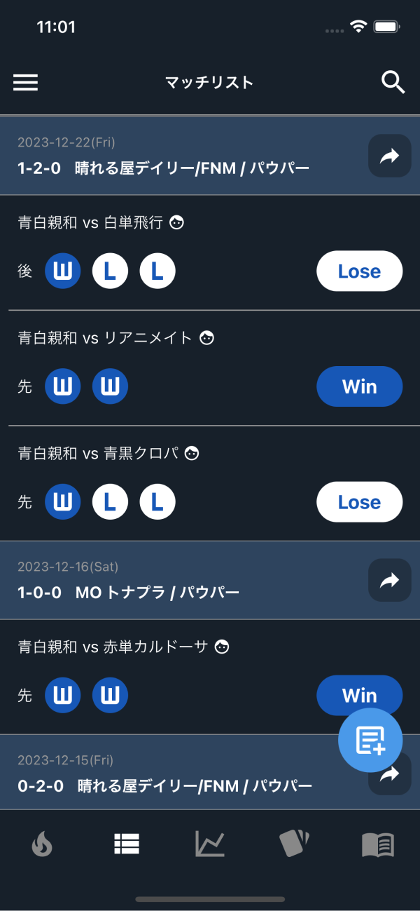

ライフカウンター
一般的なライフカウンターに加えて、ゲームごとの勝敗や先手後手、マリガン回数の記録も行えます。またライフの履歴も見ることができます。
Life Counter
In addition to the general life counter, you can also record the number of wins, losses, play-first, draw-first, and mulligans in each game. You can also view your life history.

マッチの一覧
これまで行ったマッチを日別の一覧で見ることができます。使用したデッキ、対戦相手のデッキ、ゲームごとの勝敗などが一目瞭然です。
Matches List
You can view a list of matches you have played so far by day. You can see at a glance the decks you used, your opponents' decks, and the win and lose of each game.

マッチの詳細
マッチの詳細な記録を見ることができます。対戦相手やメモを記入したり、ゲームのライフ履歴、マリガン回数、ゲームにかかった時間なども表示されます。
Match Details
You can view a detailed record of your matches. You can enter your opponents and notes, as well as view your game life history, number of mulligans, time spent in the game, and more.

マッチの分析
デッキの勝率推移や、対戦デッキごとの勝率、マリガン回数の分布などを見ることができます。また、使用デッキや期間を自由に変更して分析することもできます。
Match Analysis
You can view the win rate trends of decks, the win rate of each deck played, and the distribution of the number of mulligans. You can also freely change the deck used and the time period for analysis.